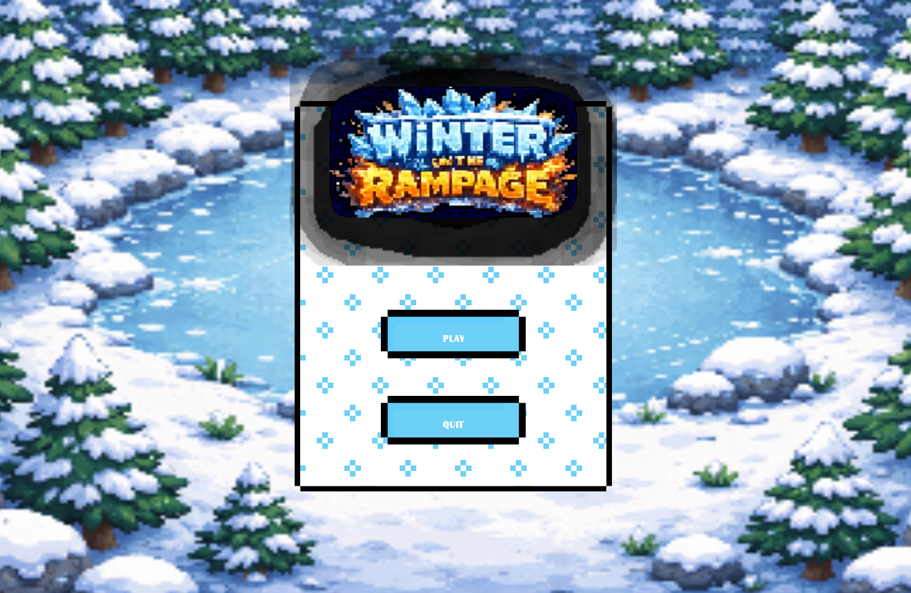
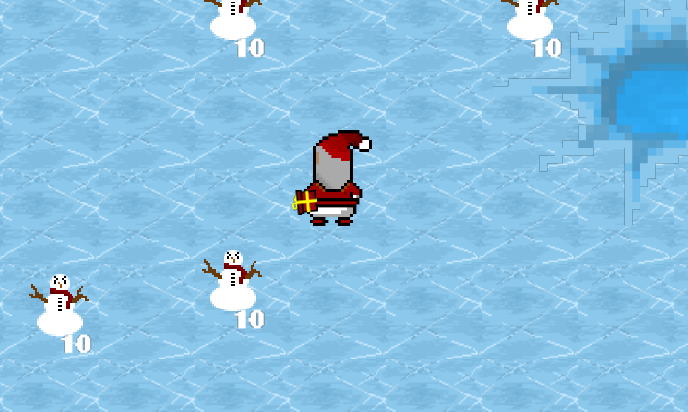

Winter On The Rampage
Jeu vidéo · Game Jam · Solo
Jeu vidéo · Game Jam · Solo

Winter On The Rampage est un jeu 2D dans lequel le joueur incarne un père Noël tentant de sauver Noël face à des bonhommes de neige hostiles. Ce projet a été réalisé dans le cadre de ma première game jam Micro Jam 052: Winter afin de découvrir le moteur GameMaker Studio 2 et le langage GML Code.
J'ai développé les déplacements du joueur, le système de tir, l'intelligence artificielle des ennemis, les systèmes de vies et de mort, le décor ainsi que le menu principal.
